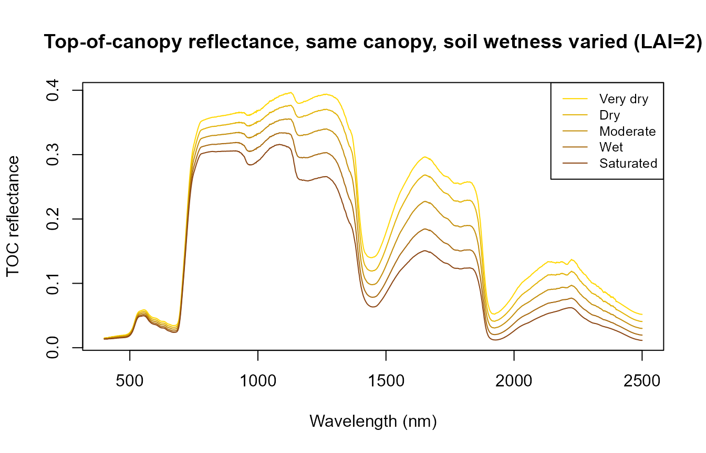
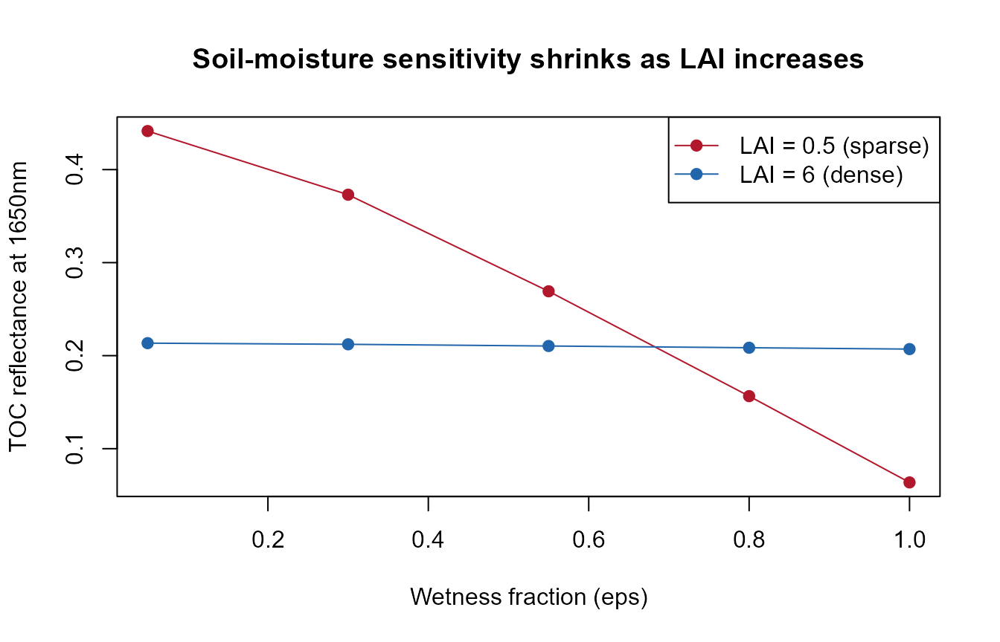

MARMIT + PROSAIL: realistic soil moisture in canopy simulations
marmit-soil-in-canopy.Rmd
library(ToolsRTM)Why soil matters to a canopy simulation
Top-of-canopy reflectance is a mixture of leaf optics and the soil
background showing through the canopy gaps, weighted by how closed the
canopy is (LAI, leaf angle, hotspot). Most examples elsewhere in this
package’s docs use a fixed, arbitrary rsoil – e.g. a 50/50
blend of a dry and wet reference spectrum (How-in-R.Rmd),
or a flat rep(0.15, 2101) (the ToolsRTM vignette,
InversionOpt.Rmd). That’s fine for isolating a leaf/canopy
trait’s own effect, but it sidesteps a real question: how much
does the soil’s actual moisture state change what a sensor sees, and
does that depend on how much vegetation is covering it?
ToolsRTM::get.marmit.rsoil() (MARMIT: Bablet et al.,
soil reflectance as a function of surface water film thickness) gives a
physically-based answer instead of an arbitrary blend – this page feeds
its output straight into foursail()’s own
rsoil argument.
1. A soil-wetness sweep with MARMIT
L (water film thickness, cm) and eps
(fraction of the surface that’s wet) control how wet the simulated soil
is – Scripts/R/ForMARMIT/1-simulate_LUT.R samples
L from [0.001, 0.15] and eps from
[0, 1] for a full LUT; here, five fixed steps across that
range are enough to see the trend:
wetness_steps <- data.frame(
label = c("Very dry", "Dry", "Moderate", "Wet", "Saturated"),
L = c(0.001, 0.02, 0.05, 0.09, 0.15),
eps = c(0.05, 0.3, 0.55, 0.8, 1.0)
)
soils <- lapply(seq_len(nrow(wetness_steps)), function(i) {
get.marmit.rsoil(database = "Bablet_2016", id = 1, L = wetness_steps$L[i],
eps = wetness_steps$eps[i], wl.out = 400:2500)
})
cat("Estimated soil moisture (SMC, %) across the sweep:\n")
#> Estimated soil moisture (SMC, %) across the sweep:
print(round(sapply(soils, function(s) s$SMC), 1))
#> [1] 3.8 9.6 43.6 47.1 47.1
wl <- soils[[1]]$wavelength
cols <- colorRampPalette(c("gold", "saddlebrown"))(nrow(wetness_steps))
matplot(wl, sapply(soils, function(s) s$rsoil.wet), type = "l", lty = 1, col = cols,
xlab = "Wavelength (nm)", ylab = "Soil reflectance",
main = "MARMIT soil reflectance across the wetness sweep")
legend("topright", wetness_steps$label, col = cols, lty = 1, cex = 0.8)
Soil reflectance darkens broadly with wetness (as real wet soil looks darker than dry soil), with the strongest relative change in the SWIR water-absorption region – the same physics MARMIT is built around.
2. Feeding it into foursail() at a fixed canopy
Same leaf/canopy trait set throughout (LAI = 2, a
moderate canopy), only rsoil changes across the five
wetness steps:
row <- data.frame(
LAI = 2, hspot = 0.01, LIDFa = -0.35, LIDFb = -0.15, TypeLidf = 1,
tts = 30, tto = 0, psi = 0,
N = 1.5, Cab = 40, Car = 8, Anth = 2, Cbrown = 0, EWT = 0.009, LMA = 0.009, alpha = 40
)
toc_by_soil <- sapply(soils, function(s) {
sail_i <- foursail(inputLUT = row, rsoil = s$rsoil.wet, LeafModel = "PROSPECT-D")
Compute_BRF(rdot = sail_i$rdot, rsot = sail_i$rsot, tts = row$tts, data.light = dataSpec_PDB)
})
matplot(dataSpec_PDB[, 1], toc_by_soil, type = "l", lty = 1, col = cols,
xlab = "Wavelength (nm)", ylab = "TOC reflectance",
main = "Top-of-canopy reflectance, same canopy, soil wetness varied (LAI=2)")
legend("topright", wetness_steps$label, col = cols, lty = 1, cex = 0.8)
The canopy’s own spectral shape (chlorophyll absorption, red edge, NIR plateau) stays recognizable throughout – but the SWIR bands still shift noticeably with soil moisture alone, nothing about the vegetation itself changed between these five curves.
3. Does this matter more at low LAI than high LAI?
Physically, yes: a sparse canopy leaves more soil visible through the
gaps, so soil moisture should influence the sensor-observed signal more
at low LAI than at high LAI, where the canopy itself dominates. Repeat
the same sweep at LAI = 0.5 (sparse) and
LAI = 6 (dense), and compare the driest-vs-wettest
difference at a SWIR band (1650nm, in MARMIT’s strongest water-sensitive
region):
swir_idx <- which(dataSpec_PDB[, 1] == 1650)
toc_by_lai <- function(lai) {
row_i <- row; row_i$LAI <- lai
sapply(soils, function(s) {
sail_i <- foursail(inputLUT = row_i, rsoil = s$rsoil.wet, LeafModel = "PROSPECT-D")
Compute_BRF(rdot = sail_i$rdot, rsot = sail_i$rsot, tts = row_i$tts, data.light = dataSpec_PDB)[swir_idx]
})
}
refl_sparse <- toc_by_lai(0.5)
refl_dense <- toc_by_lai(6)
cat("SWIR (1650nm) reflectance, driest vs. wettest soil:\n")
#> SWIR (1650nm) reflectance, driest vs. wettest soil:
cat(" Sparse canopy (LAI=0.5): ", round(refl_sparse[1], 4), "->", round(refl_sparse[5], 4),
" (delta =", round(refl_sparse[1] - refl_sparse[5], 4), ")\n")
#> Sparse canopy (LAI=0.5): 0.4415 -> 0.0637 (delta = 0.3777 )
cat(" Dense canopy (LAI=6): ", round(refl_dense[1], 4), "->", round(refl_dense[5], 4),
" (delta =", round(refl_dense[1] - refl_dense[5], 4), ")\n")
#> Dense canopy (LAI=6): 0.2134 -> 0.2071 (delta = 0.0064 )
plot(wetness_steps$eps, refl_sparse, type = "o", pch = 19, col = "#B2182B",
ylim = range(c(refl_sparse, refl_dense)),
xlab = "Wetness fraction (eps)", ylab = "TOC reflectance at 1650nm",
main = "Soil-moisture sensitivity shrinks as LAI increases")
lines(wetness_steps$eps, refl_dense, type = "o", pch = 19, col = "#2166AC")
legend("topright", c("LAI = 0.5 (sparse)", "LAI = 6 (dense)"), col = c("#B2182B", "#2166AC"), pch = 19, lty = 1)
The sparse canopy’s SWIR reflectance swings much more across the wetness sweep than the dense canopy’s – a real, physically-expected result, not an artifact of the sweep: at LAI=6 the canopy itself blocks most of the soil signal regardless of how wet it is underneath.
Practical note
For a real LUT-based inversion or sensitivity study, this suggests:
if your target trait is canopy structure/LAI, a fixed rsoil
may be fine (soil influence is naturally small once the canopy closes).
If your study covers sparse/senescent vegetation, semi-arid areas, or
early-season crops – where LAI is often below 1-2 – sample
rsoil from get.marmit.rsoil() across a
realistic moisture range (as in
Scripts/R/ForMARMIT/1-simulate_LUT.R) rather than fixing
it, so soil moisture variation doesn’t get silently absorbed into the
trait estimates.
Scripts/R/Pipeline/0-integrate_MARMIT_soil.R shows the same
get.marmit.rsoil() output wired into
foursail2(), inform() and SPART()
as well, for the other canopy/TOA models this package supports.